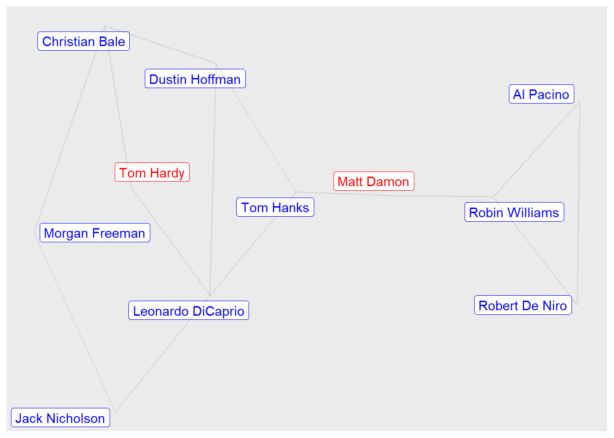
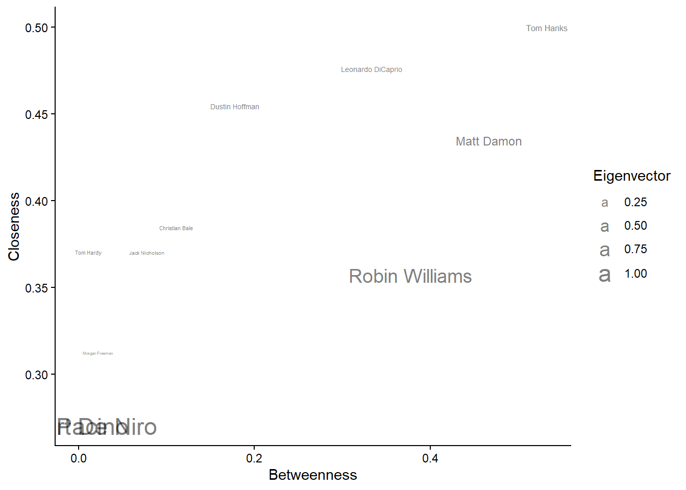
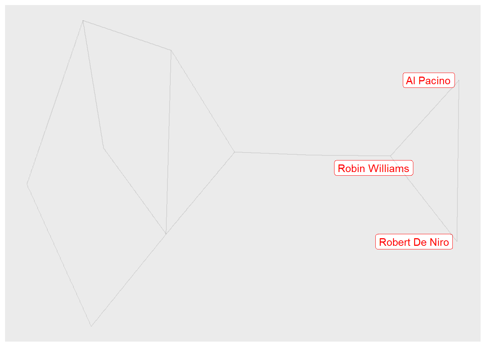
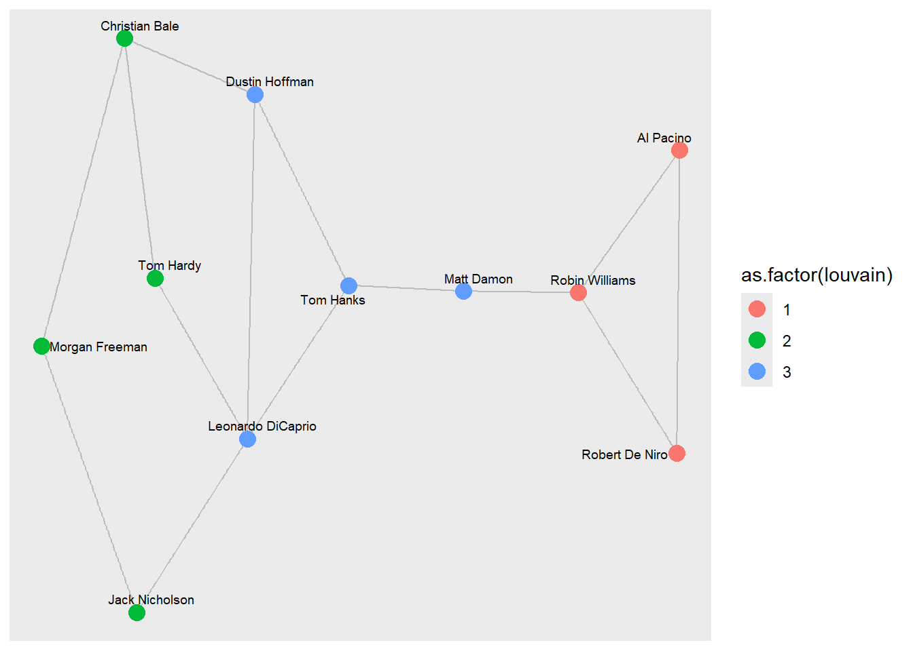
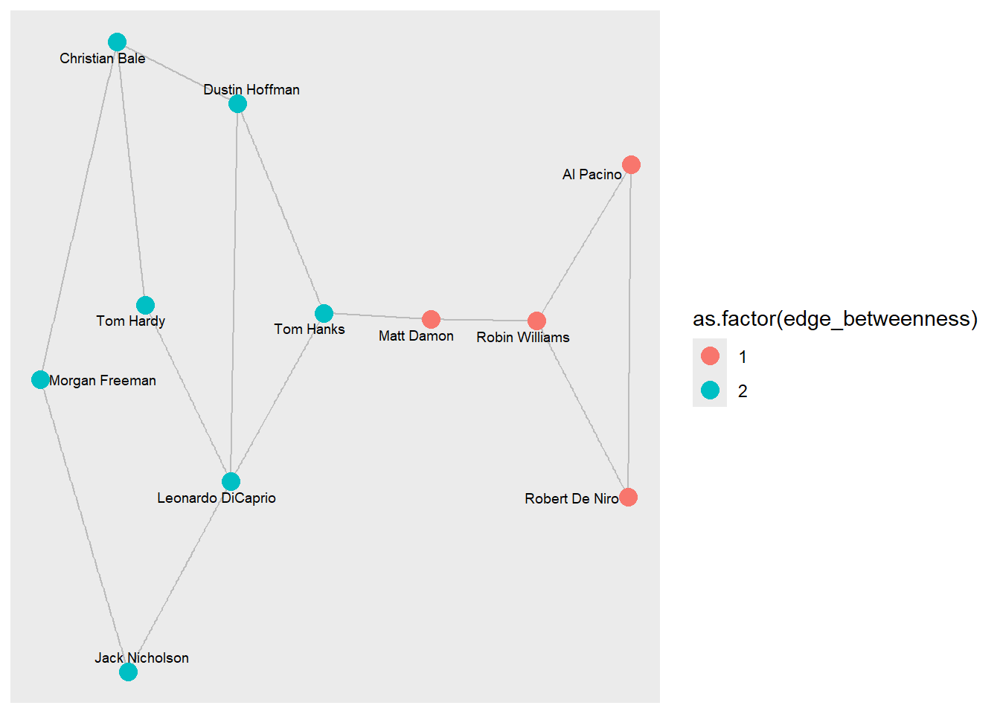
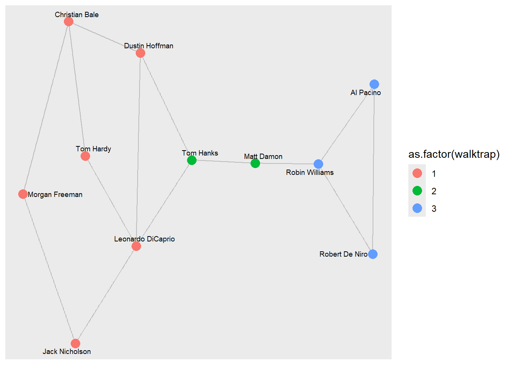
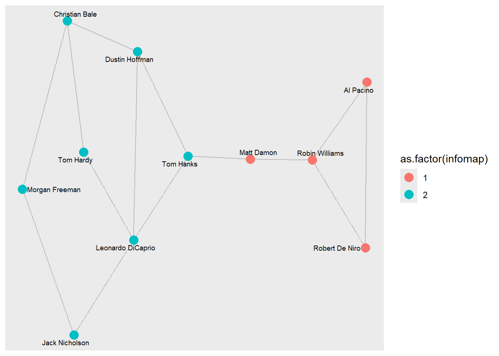
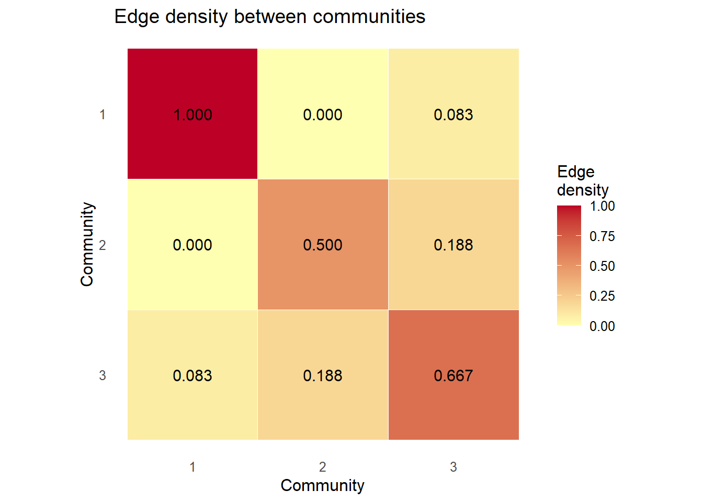
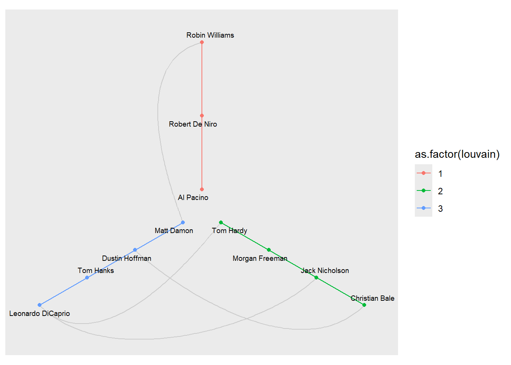

IGRAPH c8ce382 UNW- 11 14 --
+ attr: wonOscar (v/n), color (v/c), name (v/c), id (v/c), weight (e/n)DACSS690C Homework 2
Needed Libraries
Data
library(ggraph)Warning: package 'ggraph' was built under R version 4.5.3Loading required package: ggplot2Warning: package 'ggplot2' was built under R version 4.5.3base=ggraph(graph = actors)Using "stress" as default layoutbase + geom_node_label(aes(label = name,
color=as.factor(wonOscar)),
repel = TRUE,show.legend = F) +
geom_edge_link(alpha=0.1) +
scale_color_manual(values = c('red','blue'))
#blue = yes, red = noeigen=eigen_centrality (actors)$vector
print(eigen)#influence of node in network Robin Williams Tom Hardy Dustin Hoffman Leonardo DiCaprio
0.606705039 0.014699527 0.034689773 0.037143649
Tom Hanks Al Pacino Morgan Freeman Robert De Niro
0.072098921 1.000000000 0.007860685 1.000000000
Matt Damon Jack Nicholson Christian Bale
0.188206119 0.012477963 0.015873210 close = closeness(actors, normalized = TRUE)
close Robin Williams Tom Hardy Dustin Hoffman Leonardo DiCaprio
0.3571429 0.3703704 0.4545455 0.4761905
Tom Hanks Al Pacino Morgan Freeman Robert De Niro
0.5000000 0.2702703 0.3125000 0.2702703
Matt Damon Jack Nicholson Christian Bale
0.4347826 0.3703704 0.3846154 betw <- betweenness(actors, normalized = TRUE)
betw Robin Williams Tom Hardy Dustin Hoffman Leonardo DiCaprio
0.37777778 0.01111111 0.17777778 0.33333333
Tom Hanks Al Pacino Morgan Freeman Robert De Niro
0.53333333 0.00000000 0.02222222 0.00000000
Matt Damon Jack Nicholson Christian Bale
0.46666667 0.07777778 0.11111111 DFCentrality=as.data.frame(cbind(eigen,close,betw),stringsAsFactors = F)
names(DFCentrality)=c('Eigenvector','Closeness','Betweenness')
DFCentrality$person=row.names(DFCentrality)
row.names(DFCentrality)=NULL
## see
head(DFCentrality) Eigenvector Closeness Betweenness person
1 0.60670504 0.3571429 0.37777778 Robin Williams
2 0.01469953 0.3703704 0.01111111 Tom Hardy
3 0.03468977 0.4545455 0.17777778 Dustin Hoffman
4 0.03714365 0.4761905 0.33333333 Leonardo DiCaprio
5 0.07209892 0.5000000 0.53333333 Tom Hanks
6 1.00000000 0.2702703 0.00000000 Al Pacinolibrary(ggplot2)
ggplot(DFCentrality, aes(x=Betweenness, y=Closeness)) +
theme_classic() +
geom_text(aes(label=person,size=Eigenvector),show.legend = T,alpha=0.5) 
HubNodes=dplyr::slice_max(DFCentrality, order_by = Eigenvector, n = 3)$person
HubNodes[1] "Al Pacino" "Robert De Niro" "Robin Williams"NodeCount=length(V(actors))
V(actors)$label=''
for (index in seq(1:NodeCount)){
currentName=V(actors)$name[index]
if (currentName%in%HubNodes){
V(actors)$label[index]=currentName
}
}
base=ggraph(graph = actors)Using "stress" as default layoutbase + geom_node_label(aes(label = label),
repel = TRUE,
show.legend = F,
color='red') +
geom_edge_link(alpha=0.1)
Communities?
# Generate an ensemble of 1000 rewired random networks
set.seed(123)
replicates <- 1000
random_transitivities <- replicate(replicates, {
RandomNet <- rewire(actors,
keeping_degseq(niter = gsize(actors) * 10))
transitivity(RandomNet, type = "global")
})
mean_random_transitivities=mean(random_transitivities)# Calculate your empirical transitivity
empirical_transitivity <- transitivity(actors, type = "global")### Report
report_table <- data.frame(
Metric = c("Actors transitivity", "Random-network mean", "Ratio"),
Value = round(c(empirical_transitivity,
mean_random_transitivities,
empirical_transitivity / mean_random_transitivities), 4)
)
knitr::kable(report_table)| Metric | Value |
|---|---|
| Actors transitivity | 0.2500 |
| Random-network mean | 0.1310 |
| Ratio | 1.9084 |
library(igraph)
# Run all five community-detection algorithms
algos <- list(
louvain = { set.seed(123); cluster_louvain(actors) },
walktrap = cluster_walktrap(actors),
fast_greedy = cluster_fast_greedy(actors),
infomap = cluster_infomap(actors),
edge_betweenness = cluster_edge_betweenness(actors)
)Warning in cluster_edge_betweenness(actors): Membership vector will be selected based on the highest modularity score.
Source: community/edge_betweenness.c:503# Build a summary table: number of clusters, modularity (Q), and cluster sizes
summary_table <- data.frame(
algorithm = names(algos),
n_clusters = sapply(algos, length),
modularity_Q = sapply(algos, modularity),
cluster_sizes = sapply(algos, function(cl) {
paste(sort(sizes(cl), decreasing = TRUE), collapse = ", ")
})
)
# Sort by modularity, descending, so the "best" partition (by this metric) is on top
summary_table <- summary_table[order(-summary_table$modularity_Q), ]
rownames(summary_table) <- NULL
print(summary_table) algorithm n_clusters modularity_Q cluster_sizes
1 walktrap 3 0.4199219 6, 3, 2
2 infomap 2 0.4199219 7, 4
3 edge_betweenness 2 0.4199219 7, 4
4 louvain 3 0.4121094 4, 4, 3
5 fast_greedy 3 0.4121094 4, 4, 3for (name in names(algos)) {
memb <- membership(algos[[name]])
attr_name <- name
actors <- set_vertex_attr(actors, attr_name,
index = names(memb),
# this is important for exporting
value = as.vector(memb))
}
# verify new attributes
vertex_attr_names(actors) [1] "wonOscar" "color" "name" "id"
[5] "label" "louvain" "walktrap" "fast_greedy"
[9] "infomap" "edge_betweenness"base=ggraph(graph = actors) +
geom_edge_link(alpha=0.2)Using "stress" as default layoutbase + geom_node_point(aes(color=as.factor(louvain)),
show.legend = T, size=4)+
geom_node_text(aes(label = name),
repel = TRUE,
max.overlaps = 50, # avoid overlap
size = 2.5)
#edge betweenness plot?
base=ggraph(graph = actors) +
geom_edge_link(alpha=0.2)Using "stress" as default layoutbase + geom_node_point(aes(color=as.factor(edge_betweenness)),
show.legend = T, size=4)+
geom_node_text(aes(label = name),
repel = TRUE,
max.overlaps = 50, # avoid overlap
size = 2.5)
#edge betweenness plot?
base=ggraph(graph = actors) +
geom_edge_link(alpha=0.2)Using "stress" as default layoutbase + geom_node_point(aes(color=as.factor(walktrap)),
show.legend = T, size=4)+
geom_node_text(aes(label = name),
repel = TRUE,
max.overlaps = 50, # avoid overlap
size = 2.5)
#edge betweenness plot?
base=ggraph(graph = actors) +
geom_edge_link(alpha=0.2)Using "stress" as default layoutbase + geom_node_point(aes(color=as.factor(infomap)),
show.legend = T, size=4)+
geom_node_text(aes(label = name),
repel = TRUE,
max.overlaps = 50, # avoid overlap
size = 2.5)
library(reshape2)
louvain_result <- algos$louvain
memb <- membership(louvain_result)
num_communities <- length(louvain_result)
# comm_edges[i, j] will hold the density between community i and community j
# (diagonal = internal density, off-diagonal = cross-community density)
comm_edges <- matrix(0, nrow = num_communities, ncol = num_communities)
for (i in 1:num_communities) {
for (j in 1:num_communities) {
if (i == j) {
# Internal density of a community -- edge_density() correctly uses
# 2*edges / (n*(n-1)), no manual formula needed
sub <- induced_subgraph(actors, which(memb == i))
comm_edges[i, j] <- edge_density(sub)
} else {
# Cross density: edges crossing between community i and community j,
# divided by every possible pair between the two groups
nodes_i <- which(memb == i)
nodes_j <- which(memb == j)
el <- as_edgelist(actors, names = FALSE)
boundary <- sum((el[,1] %in% nodes_i & el[,2] %in% nodes_j) |
(el[,1] %in% nodes_j & el[,2] %in% nodes_i))
possible <- length(nodes_i) * length(nodes_j)
comm_edges[i, j] <- boundary / possible
}
}
}
# Plot the density matrix as a heatmap; diagonal cells are internal density,
# off-diagonal cells show how "leaky" the boundary is between each pair
dimnames(comm_edges) <- list(1:num_communities, 1:num_communities)
df <- melt(comm_edges, varnames = c("Community_i", "Community_j"), value.name = "density")
ggplot(df, aes(x = factor(Community_j), y = factor(Community_i), fill = density)) +
geom_tile(color = "white") +
geom_text(aes(label = sprintf("%.3f", density)), size = 4) +
scale_fill_gradient(low = "#FFFFB2", high = "#BD0026", name = "Edge\ndensity") +
scale_y_discrete(limits = rev) +
coord_equal() +
labs(title = "Edge density between communities", x = "Community", y = "Community") +
theme_minimal(base_size = 12) +
theme(panel.grid = element_blank())
V(actors)$degree = degree(actors) # first compute node degree and assign
ggraph(actors, layout = 'hive',
axis = louvain,
sort.by = degree
) +
geom_edge_hive(color='grey80') +
geom_axis_hive(aes(colour = as.factor(louvain)),
label = F) +
geom_node_point(aes(colour = as.factor(louvain))) +
geom_node_text(aes(label = name),
repel = TRUE,
max.overlaps = 50, # avoid overlap
size = 2.5) +
coord_fixed()
null_mean <- mean(random_transitivities)
null_sd <- sd(random_transitivities)
z_score <- (empirical_transitivity - null_mean) / null_sd
count_exceeding <- sum(random_transitivities >= empirical_transitivity)
p_value <- count_exceeding / replicates
test_table <- data.frame(
Alpha = c(0.05, 0.01),
Z_score = round(z_score, 3),
P_value = sprintf("%.3f (%d/%d)", p_value, count_exceeding, replicates),
Decision = c(if (p_value < 0.05) "SIGNIFICANT" else "NOT significant",
if (p_value < 0.01) "SIGNIFICANT" else "NOT significant")
)
knitr::kable(test_table)| Alpha | Z_score | P_value | Decision |
|---|---|---|---|
| 0.05 | 1.097 | 0.278 (278/1000) | NOT significant |
| 0.01 | 1.097 | 0.278 (278/1000) | NOT significant |